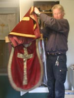

Høvåg kirke
Foto: Torvald Slettebø, Universitetet i Agder, Seniorsenteret
Tekster: Randi Stensby, Bjarne Karsten Nenseter
Kilder:
Vidar Corn Jessen: Høvåg kirke 2004.
Gjerulv Noddeland: Fra Høvågs historie; småskrift nr. 5 fra Høvågs museumes og historielag, 1980.
Gabriel Scott: Jernbyrden, 1915.
Tre sagn forteller om byggingen av Høvåg kirke. De handler om fire hjørnesteiner, et kors og ei kirkeklokke, alt viktige elementer i et kirkebygg. Felles for de tre sagnene er at en høyere makt bestemte et annet byggested enn hvor kirkefolket planla kirken. - De fire hjørnesteinene var plassert i nærheten av Ulvøysund. Plutselig satte det inn med et forferdelig uvær, og da været hadde gitt seg, var steinene borte, men ble funnet igjen nøyaktig der kirken står i dag! - Korset ble plassert på Kjøstveit (Gausvollen). "Her skal kirken stå." Neste morgen var korset borte, men ble funnet igjen der kirken står i dag. - Kirkeklokken var ankommet til kirkebygget, som nesten sto ferdig på Hærklev, mellom Ribe og Knavik. En natt forsvant kirkeklokken, men ble funnet igjen, og nytt kirkebygg reist, der kirken står i dag. (Etter Vidar Corn Jessen)
Høvåg kirke i Lillesand kommune ligger tett inn mot en fjellknaus, og den er øst-vest orientert. Et så vanskelig utgangspunkt for et kirkebygg fører til sagn om at høyere makter grep inn. Kirken var opprinnelig en langkirke av gråstein, Heyvaaga kirkja, fra 1100-tallet.
"Kirken i Høvåg sogn" heter det i offentlige papirer fra 1416. Middelalderkirken var uforandret til 1767. Tomten ga ikke plass til utvidelse til full korskirke. Men med tilbygd vestfløy ble kirken dobbelt så stor. Lars Albretsen var byggmester. I 1787 fikk kirken også våpenhus og tårn.
I frodig Høvåg-natur fører en idyllisk kirkevei opp fra Kirkekilen.
"Saa var her en søndag at almuen stimlet sammen til kirke for riktig at bytte nyheder ut. Søndag var det, og alle ville tidlig frem. Det var saa rart med det, de saa hverandre ikke så tidt - de vilde gjerne ha sig en prat før de krummet seg ind gjennom kirkedøren. " Slik beskriver Gabriel Scott livet på kirkebakken på 1700-tallet i sin bok: "Jernbyrden" fra 1915.
Kirkens eldste regnskapsbok, en såkalt Kirkestol, forteller utførlig om hvordan allmuen i Høvåg etter kongelig auksjon i 1723 ble eiere av kirken. Kongen i København Fredrik IV, var i stor pengemangel etter Den store nordiske krig, og ved reformasjonen tilfalt kirkegods kongen. Både Vestre Moland og Høvåg, som på den tid var annekskirke til Vestre Moland, ble auksjonert på den tiden. I Kristiansand Stift ble 155 kirker solgt.
"De Kgl. Vilkaar og Conditioner" med 12 paragrafer setter strenge krav til de nye eiere. Hvis ikke kirken holdes i tilbørlig stand og hevd, skal allmuen ha forspilt sin eiendiomsrett til kirken, "som da uimodsigelig og uigjenkaldelig hjemfalder Oss." (Altså kongen). Ved kjøpet var kirken i høy grad "brøstferdig". Kirkestolen viser at vedlikeholdsarbeid bla satt i gang. Innkjøp er nøye bokført fra bjelker og takstein til spiker.
Folk i Høvåg har tatt vel vare på sin kirke med reparasjoner, tilbygg og ominnredninger helt opp til vår nærmeste tid. Gabriel Scott skriver om kirken som den var i 1787: "Imens laa kirken tilbake paa muren, hvidkalket over det hele, og bredte som en hørbar stillhed omkring sig, mens den pekte opad mot skyen med sitt lille, uskyldige taarn."
Gården Folkvang, den blir også kalt Scottgården. Gabriel var 8 år gammel da faren Svend Holst Jensen ble prest i Høvåg.
Gabriel Scott varden. Bildehogger Nic Schiøll har utført bronserelieffet. Teksten på minnetavlen: Ungdomsår i Høvåg 1882-91, og et sitat: "Den nøysomme har det opladte sinn."
Slutten av 1700-tallet var urolige tider. Chr. Lofthus, en dyktig gårdbruker, ble leder for bøndene i saken mot embedsmennenes maktovergrep. Han hadde en stor del av allmuen i Høvåg med seg. I "Jernbyrden" skildrer Scott den opphissede stemningen: "Folk mødte væbnet til kirken, som for hundrede aar siden og mere, vaabenhusene i Høvåg og Moland ble hver søndag til krigsarsenaler. Her sto økser, børser og sabler opstillet i krokene, her hang pistoler og lange kniver paa væggene."
Nils Gammelsen bygde tårnet. Scott har en fornøyelig samtidig respektfull beskrivelse: "Her er jo ingen størrelse paa det. Som det kan sees den dag i dag. Det ligner mest paa en lyseslukker, som de har sat fra sig paa taket, men folk var litet forvændt den tiden og syntes det var store ting som det var. Ellers er det ikke stygt heller, og det klær kirken paa et vis, for saavidt som det passer til den og er like saa prunktløst som huset."
Kirken har to klokker i tårnet. Klokken fra 1937 fra O. Olsen og Søns klokkestøperi ved Tønsberg. Den har et relieff med Bibelen og samme innskrift som på altertavlen: Soli Deo Gloria - Gud alene æren.
Den eldste klokken er pyntet med en bord, og har innskriften: Me Fecyt - (Jeg gjorde den) Hans Meyer anno 1660.
Trapp opp til klokkene i tårnet. Oppe tårnet finner vi Scotts signatur: Gabriel Scott Jensen, 29/3 1891.
Man behøver ikke lenger klatre opp i tårnet for å ringe eller kime til helg og høytid. På 1980-tallet ble det installert elektrisk ringing som betjenes fra våpenhuset.
Et historisk minne.
I eldre tider kan det ha vært en steinring ved Høvåg kirke slik som fortsatt står ved Harkmark kirke
Bak Høvåg kirke er det en stor grønn slette. Halvard Vesterhus, leder i Høvåg Museums- og Historielag, utaler seg om en mulig steinring: "Spørsmålet om det har vært steiner i en ring eller mer tilfeldig plassert ute på jordet savner god dokumentasjon. Vi håper jordet kan bli undersøkt ei gang, i samarbeid med grunneieren. Da vil en sannsynligvis se spor i jorda etter ev steinsetting. En informant som var med på høying her på 1930 tallet kunne ikke huske stein ute i jordet som var til hinder for dyrking av jorda. Vedlegger ei side fra Utskiftningsprotokollen for den nyinnkjøpte prestegården fra 1866. Teigene 69, 70, 71 og 72 ligger bak kirka. Beskrivelse og oppmåling av disse teigene er nøyaktige, og det er ikke beskrevet eller trukket fra areal for steinsetting i jordet. Men, for min del synes jeg steinene som ligger i kanten mot øst ser spesielle ut, og en arkeologisk undersøkelse av området må inkludere disse steinene og området rundt.
De store steinene ved utkanten av sletta som er opphavet til spekulasjonene om en steinring i eldre tider.
Artistisk rekonstruksjon av slik det muligens kan ha sett ut hvis det var en steinring på sletta bak kirka.
De fleste kom sjøveien, og kirkefolket la til ved Kirkebrygga i Kirkekilen, en sidearm til Isefjærfjorden. Stien opp til kirken ligger slik den lå i middelalderen.
Den gamle kirkebøssen er fortsatt i bruk, og forsynt med solid hengelås. Det fortelles at bøssen har vært stjålet, tømt for mynt, men funnet igjen på Kirkenes, litt sør for kirken.
Kirkestolene var opprinnelig forsynt med dører. De hadde nummer og var vakkert dekorert. Høvåg historielag skriver: "De gamle kirkestolene var her som overalt en slags båsliknende rom. En hver eier av skyldsatt jord hadde sin faste stolplass, og gårdens størrelse var bestemmende for hvor i kirken hans stolplass var. De største gårdeieres stoler var nærmest koret, og således videre nedover utgangen. Var det trangt om plass, kunne de respektive eiere vise den eller dem bort som var kommet til sete uten den fornødne rett, i følge matrikulen."
Høvåg gamle kirke har tatt imot mange generasjoner kirkegjengere. Under den korte katolske messen sto menigheten i et mørkt rom. Reformasjonen endret mer enn interiøret. Etter nødvendige og vanskelige bygningsmessige endringer har dagens menighet et vakkert og harmonisk kirkerom for de gudstjenestlige handlinger.
Det har vært tider da bilder og utsmykking ble dekket med hvit maling, i Høvåg og mange andre kirker. Allerede i 1916 ønsket Høvåg kirketilsyn å restaurere altertavlen.
Det krevende arbeidet med å fjerne hvitmalingen ble først utført i 1934 v konservator Ulrik A. Henriksen, og hans dyktige håndverkere. Snekkerverkstedet til Geirulv Stoveland sto for restaureringsarbeidet av benkene, prekestolen og toppen av altertavlen.
Altertavlen fra 1650 har tre felt. Midtfeltet med Den oppstandne Kristus, flankert av Håpet og Troen i kvinneskikkelser. FIDES (latin for tro, tillit), bære kors og kalk. SPES (håp, forhåpning), bærer fugl og anker, symbol for Hellig ånd og Håp.
IHS - Det greske Kristus-monogrammet, oversatt: Jesus, menneskenes frelser.

Dene Altertaavla Og Præ-Deickestol Er Paa Ny Stafferet. Aff Meennigheeden i aar 1743
Lovens tavler med de ti bud danner øverste felt på altertavlen. Kirkeklokkens innskrift gjentas her: SOLI DEO GLORIA.

O Jesus for din alterfot
vi kommer her og kneler
vi kommer her og kneler
og søker liv og helsebot
for våre syke sjeler.
- Petter Dass
Kirkerommet er så lite at det gir nærhet mellom prest og menighet, om han står for alteret og forretter eller taler fra prekestolen.
Høvåg bygdekvinnelag har skaffet kirken nye tekstiler., og dyktige kvinner i bygda har brodert dette alterteppet.
Alterbord med Kirkebibel.
Altertavlen er i renessansestil.
Krusifikset og to massive sølvlysestaker er kommet til kirken etter et forlis, fortelles det. Et fremmed fartøy på vei til Russland ble totalvrak og kostbarheter pakket i kasser drev i land her og der.
Bak Alterbibelen ser vi foten av krusifikset.
Alteret med det gedigne kirkesølvet.
Altertavle og prekestol er fra samme tid, og er i samme stil som Peter Reimers arbeider i Rogalandsområdet. Fra begynnelsen av 1600-årene var Stavanger senter for kirkekunst.
Alterbordet med Bibel, krusifiks, lysestaker og nadverdutstyr.
Fra kirkens inventarliste: "I 1727 ble forært kirken en sølveske til at have brød udi."
På siden av oblatesken er gravert" "Høvog Annex kirke Ao 1727." Dette er et arbeid av Strømsømesteren Christian Berger d.e.
Alterkalk med innskrift: "Denne Kalch tilhører Høvog Kirke. 1748." Initialene AR står for sannsynligvis for Kristiansandsmesteren Andreas Rørig.
Nå har kirken særkalker.
Særkalkene er en nyere gave til kirken.
Døpevannskanne. Vestre Moland og Høvåg kirke hadde begge en kjele av messig og kobber. De var i katolsk tid antagelig til vievann og senere brukt til dåpsvannet. Høvågs middelalderkjele er på museum i Oslo.
Døpefonten er av tre. Det opprinnelige dåpsfatet i messing ble gitt til Norsk Folkenuseum i 1902.
Et gammelt bilde av interiøret fra 1900 viser at altertavlen og prekestolen var overmalt. Den gang var prekestolen plassert over alteret. Senere har man prøvd ulike plasseringer og høyde over gulvet, til den i dag har funnet sin plass.
Lesepulten er signert og datert 1777. Globen til høyre ble innviet ved gudstjenesten første påskedag 2002. Den er laget ved Kongens Verksted i Kristiansand.
I likhet med alterkledet er kledet på prekestolen brodert av den gruppen av Høvåg-kvinner som på 1990-tallet broderte nye kirketekstiler.
Maler og konservator Ulrik Hendriksen har utført et imponerende restaureringsarbeid med prekestolen, og har fullført evanglistrekken.
I 1787 måtte sydmuren repareres. Senere er den igjen forsterket etter skader fra et kraftig lynnedslag.
Gabriel Scott har sitt å si om kirkestoler og rangsforskjeller: "Og naar han tilslut kommer til kirken, saa maa han ha egen stol, hvor han kan sitte ganske for sig selv og syne folk hvad han er for en kar. Og den stolen maa helst ha grind, som kan stænges på indsiden. Saa sitter han og er smaakonge i stolen akkurat som paa neset eller øen og bringer standsforsjell ind i kirken med.
- For en maa ikke tro at han aapner stolen og ber folk som staar om at sitte. Nei, om han saa sitter alene i stolen, saa fylder han heller stolen med hovmod end med naboer, som er mindre i magt end ham selv."
En av de gamle kirkedørene er bevart, med opprinnelig tekst, dekor og fargesetting. Den har nummeret 14, og angir hvor innehaverne kommer fra.
Kirkeskipet PRØVEN er en gave til kirken fra Danmark-skipper Abraham Halvorsen, Trøndenes.
Skipperen kjøpte modellen i København i 1834, og fikk fregatten vellykket hjem, anbragt i kornlasten.
Ornamentikk, seilføring og kanonenes antall viser at det er et orlogsfartøy.

Kirken fikk sitt første orgel i 1904. Det nye orgelet ble innviet palmesøndag 1966 av domorganiset i Oslo, Arild Sandvold.
I 1904 ble galleriet utvidet og gav plass til Orgel. Da fikk orgelgalleriet den vakre dekoren.
Trapp opp til det ene av sidegalleriene.

NGSØ står for Nils Gammel Søn Øresland, som etter at tårnet var ferdig i 1787 "Pudset murene op baade udvendig og indvendig i kirken".
Den eldste messehaglen, stilren og ærverdig. Kirketjener Kjetil Lystrup viser den fram.
En av de gamle messehaglene brodert med Kristus-symbol
Fra sakristiet: I tillegg til de gamle messehaglene har kirken også nye, i liturgiske farger, stolaer, og klede til alter og prekestol. Arbeidet er finansiert, utført og brodert av kvinner i menigheten. Alle forslag til materiale og motiv ble godkjent av menighetsrådet. Et flott lokalt prosjekt.
En bevart vedovn minner om en tid før elektrisk lys og oppvarming.
I 1960-årene ble dette rommet innredet til kapell, og fungerer også som dåpssakristi.
Sogneprester i Høvåg kirke.

Kirkens kjeller er innredet til bårerom. Trappen ligger godt i terrenget, fint tilpasset muren.
Inne i bårerommet er plassert tiloversblevne kirkebenker. Husmorlaget gav korset i glassert mosaikk.
Slekt skal følge slekters gang. Den velstelte kirkegården er fortsatt i bruk
Kilder:
Vidar Corn Jessen: Høvåg kirke 2004.
Gjerulv Noddeland: Fra Høvågs historie; småskrift nr. 5 fra Høvågs museumes og historielag, 1980.
Gabriel Scott: Jernbyrden, 1915.
Høvåg Kirke - På Kirkevandring i Aust-Agder
Høvåg utgjør den sørvestlige delen av Vestre Moland prestegjeld. Som Vestre Moland i det hele, har Høvåg en kyststrekning som hører til de vakreste partier av sørlandsskjærgården. I de senere år er her gjort en rekke rike funn fra yngre steinalder. De forteller at Høvåg ble tidlig bebygd. Det ligger flere gårder inne i landet, men den største bebyggelsen har vi langs kysten. Navn som Skottevik, Ulvøysund og Gamle Hellesund taler om noen av Sørlandets mest kjente sommersteder.
Alt i middelalderen fikk Høvåg sin egen kirke. Dens historie går tilbake til 1100-tallet, muligens enda lenger. I flere hundre år hørte den til Vestre Moland, men ble eget prestegjeld fra 1864. Siden kommunesammenslåingen i 1962 er Høvåg igjen lagt til Vestre Moland. Opprinnelig var kirken en langkirke i stein, ca. 10 m lang. I 1768 ble den forlenget til det dobbelte. Byggmester var Lars Albretsen Øvernes fra Holt som også sto for ombyggingen av Holt kirke og flere andre.
I 1828 fikk kirken et tilbygg. Det året ble det bygget en korsarm midt på nordre langvegg. Den er kirkens hovedskip. Alteret ble plassert midt på søndre langvegg med prekestolen over alteret. Bak alterpartiet ligger kirkens sakristi som er oppført i tømmer. Etter ombyggingen fikk kirken ca. 330 sitteplasser. Kirken har ved denne ombygging fått en særpreget form, en såkalt T-form. I 1831 fikk den tårn. Det store våpenhus fungerer som kirkestue. Høvåg kirke har en vakker altertavle i renessanse fra ca. 1650 med den oppstandne Kristus i midtfeltet. På den ene side er den flankert av en kvinneskikkelse med inskripsjonen Fides (troen) og på den andre siden Spes (håpet) symbolisert ved en kvinne med en due i den ene hånden og med den andre støttet til håpets symbol, ankeret. Øverst på altertavlen finner vi lovens to tavler. Tavlen har en vakker ramme med dekorativ akantus.
Prekestolen er trolig fra samme tid og har fire felt som har hatt bilder av de fire evangelister. Det vakre og fargerike interiør ble ved midten av forrige århundre overmalt her som så mange andre steder. Ved århundreskiftet fikk den nye benker. I 1904 fikk den orgel. Kirken har to kirkeklokker, en fra 1660 og en fra 1937.
Det gikk med Høvåg kirke som så mange andre. Menigheten kunne ikke glemme den fargeprakt kirken tidligere hadde hatt. I 1934 begynte restaureringsarbeidet som først ble fullført i 1966. Fargene i altertavlen ble avdekket, og de før nevnte motiver flyttet til en ny plass så den kom lavere og nærmere menigheten. Benkene fikk nye endestykker og det ble lagt inn elektrisk lys. Kirken har også fått elektrisk oppvarming. Videre har den fått nytt prektig orgel.
Med sin særpregede form, sitt vakre interiør og sin fine beliggenhet hører Høvåg kirke med til de interessante og verdifulle kirkehus vi har langs sørlandskysten.
Teksten er hentet fra Bjarne Karsten Nenseters bok ”På Kirkevandring i Aust-Agder”, som han utga i 1993, på grunnlag av sine artikler i Agderposten i 1950-årene, da han var prest i Aust-Agder. Vi gjengir her teksten med tillatelse fra Nenseters arvinger.